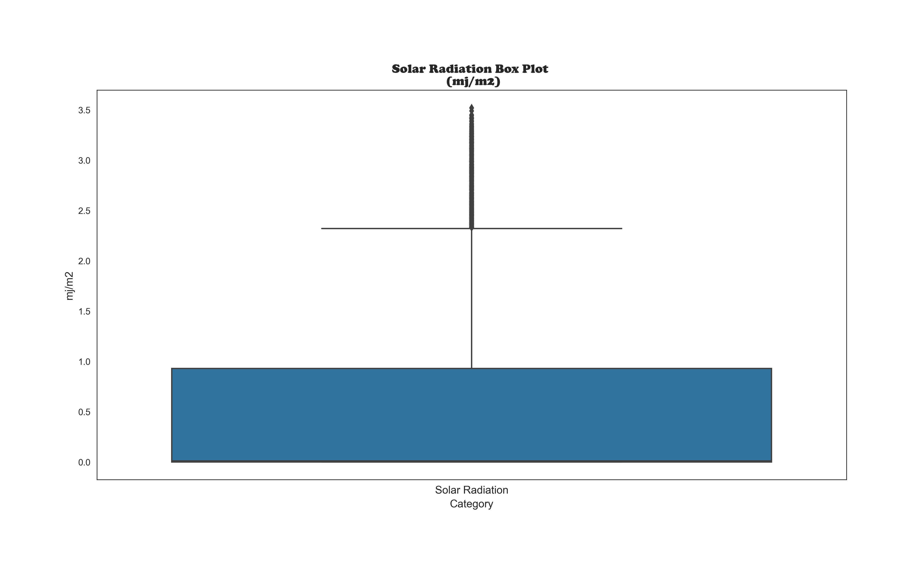
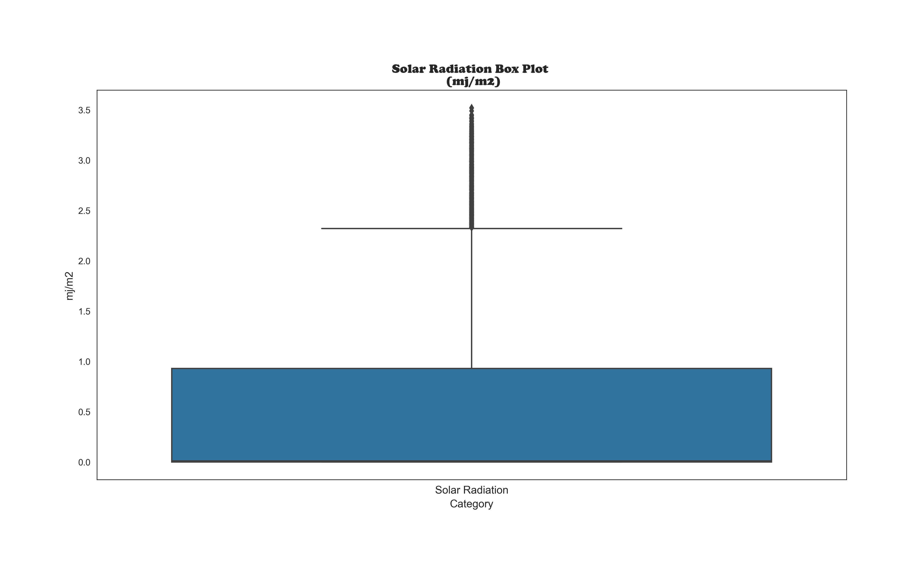

About me
Hi, my name is Renata, and I’d like to share a bit about myself. I come from the Tax field, where I worked for 10 years. You might wonder, ‘Why did I transition from Tax to the IT area?’ Well, even during my time in Tax, I always found myself automating tasks and dabbling in ETL (even before I knew what it was). In the Tax domain, I leveraged my Excel expertise to solve business-related problems. However, when I became a mother, I realized I needed a change—to find a job I could do from home and be close to my kids. So, I reinvented myself and discovered that I love working with programming languages, data science, and Machine Learning.

I'm looking for a position as a Python Developer or a Data Engineering
A little about myself.
- e-mail: recalesi@yahoo.com.br
- Country: Brazil
- City: Sao Paulo
- A little more about me: I'm married and have two daughters.
- Hobby: I play piano
“I am a tenacious and lifelong learner, fueled by enthusiasm to collaborate with the company and drive toward achieving exceptional results.”
Portfolio
This portfolio was created to highlight my Python and Power BI abilities, showing how I can apply them in the real world.
For these projects, I used libraries such as math, pandas, numpy, matplotlib, seaborn, sklearn and skmultilearn problem.
My thanks to Data Science Academy, not only for suggesting these projects on their blog page, but also for being my mentor in building this portfolio.
If you are interested in seeing more you can access my GitHub portfolio at the links below.
Individual Projects
- Machine Learning projects with Python
- Power BI Projects
-
Microsoft Fabric Projects
-
Optimizing My Study Routine with Microsoft Fabric
A Data-Driven Journey to Mastering Time Management
-
Clusterization Analysis with PySpark
Clusterization Analysis in Microsoft Fabric
-
Optimizing My Study Routine with Microsoft Fabric
Group Projects
-
Commodities Agrícolas Inteligentes
-
-
Case Study Amphibians Multi-Label Classifier
IntroductionThis project aims to identify the presence of amphibians in the vicinity of two road construction sites in Poland. Our objective is to predict the presence of various types of amphibians near these construction sites and assess the environmental impact on these animals.
.jpg)


The dataset provided by the UC Irvine Machine Learning Repository includes information on buildings, reservoirs, urban or rural areas, reservoir surface characteristics, water reservoir types, the number of reservoirs, minimum distances from buildings and roads, reservoir maintenance status, and shore types.
One of the initial challenges was understanding the different types of amphibians provided in the dataset. As I lack expertise in amphibians, I had to familiarize myself with the fact that the dataset doesn't just include frogs but also various types of frogs, newts, and toads. Additionally, it was important to recognize that each species prefers a specific type of environment.
Another challenge was comprehending the information in the dataset and understanding the meaning of each feature. Upon closer examination, it was surprising to find discrepancies between the expected values and the actual values provided. For instance, for the variable "TR," we expected values ranging from 'a' to 'j' or from 1 to 10. However, the dataset included different numeric categories such as ‘1’, ‘5’, ‘12’, ‘14’, ‘15’, ‘11’, ‘2’, and ‘7’ for the TR feature, with no accompanying information regarding their meanings. These numbers likely represent internal codes used by the authors of the dataset to denote water types, but without a clear key, it was challenging to interpret their significance. This lack of clarity hindered our ability to explore certain features in more detail. Such preliminary analysis is crucial before constructing a model.


In our feature engineering process, we performed numerical and categorical transformations and created new features and classifications to aid in the analysis of amphibian types. Before constructing our model, we visualized relationships and constructed charts to better understand the data. For this project, we utilized the Binary Relevance scheme with a Random Forest model, assuming that all class labels are independent of each other. We employed pandas for data manipulation, matplotlib and seaborn for data visualization, and sklearn for preprocessing the data using MultiLabelBinarizer. Additionally, we built a model using skmultilearn’s Binary Relevance technique with a Random Forest model. Our workflow involved understanding the data, exploring variable categories, transforming variables, and optimizing memory usage. We addressed missing values and unique value considerations, converting categorical types to binary representations.
Analysis and ResultsThe model achieved a Total Hamming Loss of 0.25 and an F1 Score of 0.69. This result is satisfactory, especially when compared to other schemes such as Label Powerset and Classifier Chain, which achieved 29.76% and 27.38% respectively. Our ROC curve indicates good coverage, with values close to 1. Thus, the Random Forest with Binary Relevance Scheme demonstrated superior performance for our classification problem.


This project marked my first experience with multilabel classification. As a result, I now feel more comfortable tackling other multilabel classification problems. I am confident that this project has significantly contributed to my knowledge in this area.
You can see details about this project on my page on the Medium site.Clique aqui
Project information
- Category: Machine Learning MultiLabel Classification Problem
- Client: UC Irvine Machine Learning Repository
- Project date: August, 2023
- Project URL: www.github.com/Renata-Thomazelli/amphibians
- Medium URL: www.medium.com/@recalesi/a-multi-label-classification-with-machine-learning-dffc986fe885
Case Study Rental Bikes in Seoul a Linear Regression
Introduction
Bike-sharing systems have become an essential part of urban transportation. Accurate predictions of bike rental demand can help optimize fleet management, improve user experience, and ensure a stable supply of rental bikes.
Our dataset comprises hourly records, including weather data (temperature, humidity, etc.) and the total number of bikes rented. Each observation represents a specific hour of the day.
Our goal is to build a predictive model that accurately estimates the bike rental count for each hour based on various factors. This project is not finished yet. What you will see on my GitHub page is a work-in-progress.

Data analyzed with Power BI
Data analyzed with Matplotlib and Seaborn


Looking for Outliers

 



The Machine Learning' Models Plots


A little introduction to show you the Web Application in action
To achieve this, I used Linear Regression. The user inputs data about the calendar, weather, and hour, and. The trained model processes this information to estimate the number of bikes available.
Project information
- Category: Linear Regression
- Client: Seoul Bike Sharing System
- Project date: April, 2024
- Project URL: https://github.com/Renata-Thomazelli/seoul_bikes
A Data-Driven Journey to Mastering Time Management
🧠 Case Study: A Data-Driven Journey to Mastering Time Management
How I Turned My Study Routine into a Personal Analytics Project Using Microsoft Fabric and Power BI
Background
During my postgraduate studies in Data Science, I found myself overwhelmed by complex subjects like mathematics and statistics. I realized that my biggest challenge wasn’t just the content—it was the way I was managing my time. I wasn’t studying efficiently, and I needed a smarter approach.
The Challenge
Like many learners, I struggled with distractions and an uneven study schedule. Traditional calendars and to-do lists weren’t cutting it. I wanted more than reminders—I wanted real insights into how I was spending my time and whether I was allocating it wisely across subjects.
The Solution
- Applied Pomodoro and Timeboxing techniques to improve focus.
- Retrieved calendar event data using Microsoft Graph API connected to my business account for secure access.
- Processed the data using Python and PySpark in Microsoft Fabric Notebooks.
- Organized the data into a medallion architecture with Bronze, Silver, and Gold layers.
- Cleaned and transformed data with Power Query and built semantic models.
- Queried the information with SQL Analytics Endpoint and visualized everything in Power BI dashboards.
What I Gained
- A clear understanding of how I spent my study time.
- Insight into where I faced the most doubts or needed extra help.
- A reusable framework for tracking productivity and learning progress.
- Hands-on mastery of Microsoft Fabric and Power BI, demonstrated in a real-world use case.
The Outcome
By transforming my personal challenge into a professional project, I not only optimized my study routine but also created a powerful portfolio piece. It’s a practical example of how data can improve everyday life—and how technology can support continuous learning.
🎓 Video Series: Managing My Time with Microsoft Fabric & Power BI
This video series documents the technical journey I undertook to optimize my study schedule through data engineering and visualization tools. Each video highlights a unique stage of my process.
📘 Video 1: Retrieving Calendar Data with Microsoft Graph
I used Microsoft Graph and Graph Explorer to access calendar data from Outlook. Queries were refined using Postman, ensuring correct time zone settings. The results were saved as a JSON file and uploaded to a Lakehouse in Microsoft Fabric.
📘 Video 2: Data Organization and Layering in Microsoft Fabric
I introduced my data workspace and structured raw calendar data using Bronze, Silver, and Gold layers. I developed a function to clean and transform data, applied basic feature engineering, and converted a DataFrame to JSON for use in PySpark.
📘 Video 3: Structuring Data with PySpark
Defined a schema and created a PySpark table with key event data. Performed transformations and validated the dataset—then saved the output to the Silver layer and prepared it for enhancement in the Gold layer.
📘 Video 4: Data Extraction and Category Analysis
Extracted large datasets using a PySpark notebook. Created new columns and performed category-based analysis to uncover insights on time usage, calendar events, and data patterns.
📘 Video 5: Building Efficient Calendars for Study and Learning
Transitioned from a unified calendar to separate ones focused on studying and learning English. Uploaded JSON files, processed them using PySpark, and refined the setup with a clean, three-step method—later combining the tables in Power Query.
📘 Video 6: SQL Analysis and Power Query Deep Dive
Started with SQL analysis in Microsoft Fabric and moved into Power Query transformations. I selected relevant columns, generated new ones, and validated the transformation logic for calendar event data.
📘 Video 7: Advanced Transformations with Dataflow Gen2
Performed detailed transformations using Dataflow Gen2—changing column types, extracting strings, filtering rows, renaming fields, and building targeted datasets for Power BI dashboards.
📘 Video 8: Power BI + Microsoft Fabric Integration
Connected Power BI Desktop directly to my Lakehouse in Microsoft Fabric. Imported tables to begin analysis and created visualizations based on structured calendar and time usage data.
Clusterization Analysis
Introduction
This notebook explores different ways to group data into meaningful clusters, helping to identify patterns and structure within complex information. The goal is to find the most effective clustering model—one that balances accuracy, efficiency, and practical usability.
To achieve this, we tested several widely used approaches, including K-Means, Bisecting K-Means, and Gaussian Mixture models. By comparing these methods, we aimed to understand which one performs best in organizing data meaningfully.
Throughout the analysis, we evaluated key indicators that measure how well the clusters are formed, such as the Silhouette Score and Davies-Bouldin Index. Additionally, we assessed processing times to determine how efficiently PySpark handles clustering tasks.
All of this work was executed within Microsoft Fabric, a unified analytics platform that enabled scalable data processing and simplified orchestration of clustering experiments.
This notebook serves as a comprehensive overview of our findings, offering visual representations, comparisons, and insights into how these clustering techniques behave under different conditions. Ultimately, the goal is to provide a clear understanding of the strengths and trade-offs of each model, supporting informed decisions when applying clustering to future challenges.
1️⃣ Introdução à Clusterização
2️⃣ Clusterização com Gráfico de Barras
3️⃣ Clusterização com Gráfico de Linha
4️⃣ Clusterização com Gráfico de Barras ao Longo do Tempo
Commodities Agrículas Inteligentes
Skills
Education
Postgraduate in Data Science (in progress)
2024 - 2025
Data Science Academy, Sao Paulo, SP
Data Scientist 4.0 Course (in progress)
2024 - 2025
Data Science Academy, Sao Paulo, SP
Course includes:
MBA Governance in Tax Planning
2015 - 2017
Infoco, Sao Paulo, SP
Administration with an emphasis in finance
2003 - 2007
University of Mogi das Cruzes, Sao Paulo, SP
Licenses & certifications
- Data Scientist 4.0 Course (in progress)-2024 – Data Science Academy
- Deployment of Machine Learning Models - 2023 - Data Science Academy
- Artificial Intelligence Applied to Finance - 2023 - Data Science Academy
- Microsoft Development Training for Data Science and Artificial Intelligence, Data Science e Big Data -2022 – Data Science Academy
- Genetic Algorithms in Python - 2022-Udemy
- MongoDB for Python Developers - 2022 - MongoDB University
- Programming and Machine Learning with C# and .NET Core -2022- Data Science Academy
- Cloud Computing for Data Science and Artificial Intelligence - 2022-Data Science Academy
Experiences
Professional Experience
Python Developer & Data Analyst
Dec 2021 - May 2023
Xcelis, Remote
- Agile methodologies
- Working with CLEAN Code
- Automated tests, CI/CD pipelines
- Unit testing, integration testing
- Building visualizations with PowerBI and DAX and M Language
- Troubleshooting
- Working with remote team
Python Developer
2020 - 2021
RThomaz Tecnologia de Dados MEI, Sao Paulo, SP
- Worked as a freelancer in my own company.
- Employed Python, pandas, and C# for data munging and dashboard creation.
- Developed Power BI dashboards.
- Employed Python, pandas, Matplotlib, and Seaborn to construct charts.
- Applied Scikit-learn to construct Machine Learning Models.
- Utilized standard database tools such as SQL in Microsoft SSMS.
- Applied Genetic Algorithms.
Data Analyst
2020 - 2021
Project: Price of Wheat Commodity around the world , Sao Paulo, SP
- Analyzed global time series data encompassing temperature, precipitation, and worldwide wheat production, exportation, and importation.
- Leveraged a suite of data analysis and visualization tools, including Python libraries (pandas, numpy, matplotlib, chardet), Jupyter Notebook, Colab, and Power BI, to conduct in-depth data analysis and create impactful visualizations.